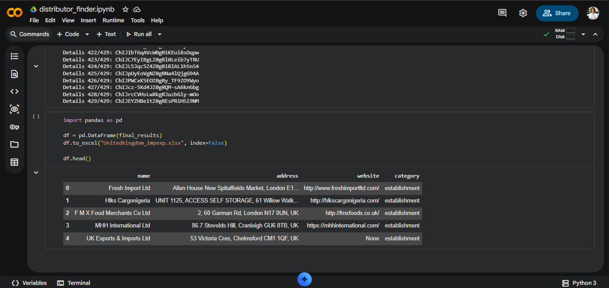

"I’ve tried to open an account with about 100 distributors and in 95% of cases I was refused. And those from whom I was able to open a wholesale account, they do not have profitable products."
"But as I looked through their price list, their prices were to high when I compared to what it is selling on amazon."Such statement can be found on Amazon discussions and reddit. One of the critical issues in Google searches is that it won't give you all the websites you are looking for due to its nature. Moreover, there are websites that only appear when you search for their company name, which is crucial since you only have keywords such as "B2B", "Wholesalers", and "Distributors" together with a location. Hence, such keywords limit what Google can provide. There are lead generating tools, however these will cost you another penny which would add to your costs and will not guarantee results due to the vagueness of their keywords.

📸Replace with screenshot-output.png